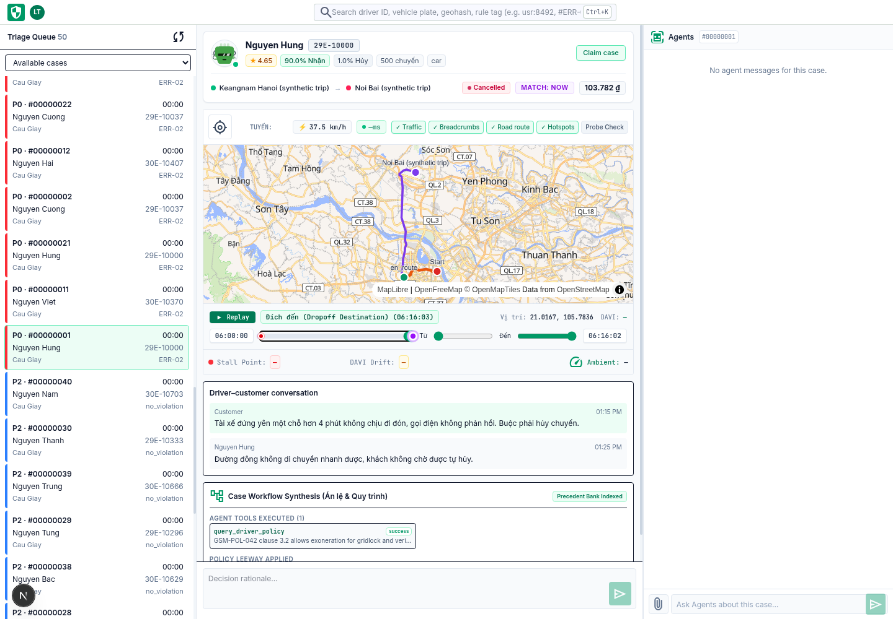

Playback checkpoints
Design prototype for issue #63 / PR #82. Native-size marker legend for the existing compact cockpit.
Local SVG / HTML proposal · Visual approval pending · Stitch unavailable
One role. One recognizable shape.
Uniform 24-unit SVG grid; 2-unit strokes. All carriers anchor at their center. Timeline vehicle samples describe the playhead, not an additional checkpoint.
States without size jumps
Ring changes only. Glyph and coordinate anchor stay fixed. Hit target: 32px pointer; 44px touch.
Unknown stays unknown
Missing, unsupported or conflicting source value. Never infer from plate, speed, route or service name.
Map overlap · schematic only
Leader ends at true anchor.
Driver stays at coordinate.
No map, road or telemetry is represented by this schematic.
Timeline overlap · layout specimen
Group colliding controls. Open a named, chronological list with 44px rows. Exact timestamps stay unchanged; no invented spacing.
Existing cockpit reference
Original screenshot, unchanged. Its own synthetic labels remain visible. Reference only; proposed markers are not overlaid onto unverified positions.
Show existing screenshot (1440 × 1000)
